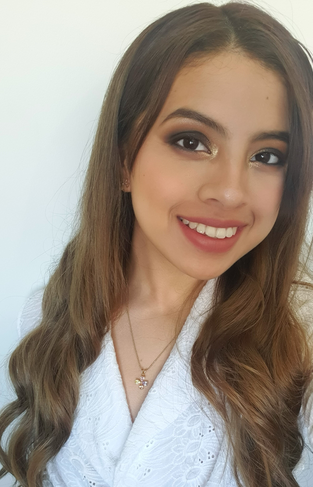

Redes sociales:
Instagram:
@sekai.blueYamel Yamilet Burgos Lucas

Contacto:
Fecha de Nacimiento: Telefono: E-mail:
25/10/2000 11 30450455 Burgos.13.yamel@gmail.com
A la edad de 23 años me considero una persona capaz de sobrellevar distinto tipo
de situacion. Entre mis logros estetica para
embellecer a muchas mujeres, tengo experiencia de mas de 2 años en el rubro. Busco demostrar cada una de mis destrezas y cualidades.
Enero-2019
Secundario-Completo(2018)